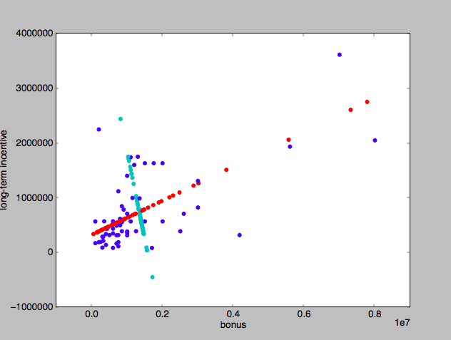

28. PCA in sklearn
PCA in sklearn
INSTRUCTOR NOTE:
The projection step of PCA can be easiest to understand when you subtract out the mean shift of the new principal components, so the new and old dimensions have the same mean:

The function doPCA should take data as an argument.